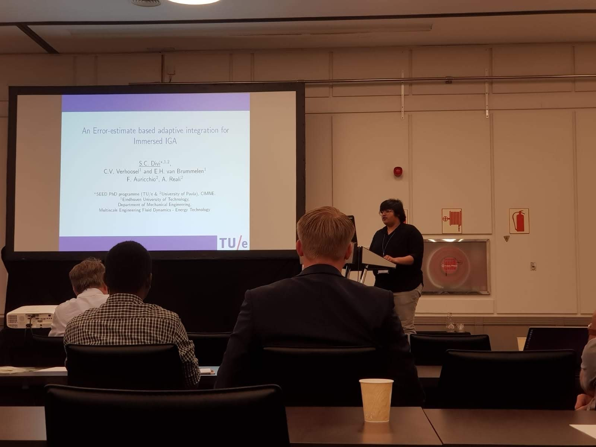

2019
Engineering Mechanics symposium
23 Oct. 2019
Engineering Mechanics (EM) is a graduate school that brings all internationally important research groups that are active in the field at 4TU, i.e. Eindhoven University of Technology, Delft University of Technology, University of Twente and University of Groningen. For more information about the graduate school check engineeringmechanics.nl.
On every fall, all members of the graduate school gather at the annual two-day EM symposium. The two days contains a plenary lecture (Koiter lecture), thematic workshops with semi-plenary lectures by invited PhD candidates, poster presentation by PhD members of EM and an award ceremony.
This year, I am invited to present my research work on Error-estimate-based adaptive integration for immersed isogeometric analysis in a thematic workshop on Advanced discretization and solution techniques. Since I am living in Italy, I flew to the Netherlands for the event. It is a pleasure to present work in the workshop. As always, I have also participated in the poster presentation.
Comp-mech fan-moment: first-time listening to Prof. T. J. R. Hughes (the legend of the Isogeometric analysis)
18 Sep. 2019
The main focus of my PhD work is built-on the immersed and isogeometric analysis. Anyone in the field of computational mechanics knows a few popular names. Prof. Hughes is, of course, one among them. He is the man behind the famous isogemetric analysis - which binds the Finite element method with splines (from CAD geometries). At Munich, on the occasion of Isogeometric analysis conference, he gave a keynote speech and this is my first time to listen to him after reading his many books and papers. It was a fan-moment to this young researcher. His talk was, of course, amazing and with a lot of sense of humour, which I think we can not observe it in the academic writings (exception to Strang & Fix).
Later in the event, I have also presented in an immersed methods mini-symposium. After the presentation, I had a very nice discussions with Prof. A. Buffa from EPFL. The conference sets a very good platform for such discussions naturally which might not happen without them. One of the evenings, we had a fascinating introduction to the Bavarian culture with music and performances.
Prof. Hughes delivering keynote speech at the conference
Start of second-phase of the PhD
02 Sep. 2019
Throught my academic career has been an exchange/collaboration between two universities. The same is followed for the doctoral program as well. As a part of the Simulation in Engineering and Entrepreneurship Development (SEED) 2017 consortium under Erasmus Mundus joint-doctoral program, I have a chance to collaborate with the Computational Mechanics & Advanced Materials (CompMech) research group at University of Pavia. Hence, I moved to one of the oldest Italian city - Pavia, which hosted academic marvels like A. Volta (man behind the batteries), Einstein and his family for a long time. At the University of Pavia, I will be closely collaborating with Prof. F. Auricchio and Prof. A. Reali. Occasionally, I will also have meetings with Prof. G. Sangali from the Mathematics department. I am looking forward to enjoying not only the research but also the experience of the rich italian heritage.
University of Pavia, Pavia, Italy
Talk at MFET 2019
03 July 2019
I have got a chance to present in MFET 2019, one of the thematic conferences by ECCOMAS. It was a nice opportunity to see the known people and meet a few new people in the field of computational mechanics. The talks were very interesting, especially, I enjoyed listening to Niels Aage from Denmark TU on topology optimization methods. It was a very happy moment to see and talk to Prof. A. J. Gil (from Swansea University) again after my Swansea days. The post-presentation discussions were interesting and engaging. The conference took place in a beautiful spa town called Bad Honnef near Bonn, Germany.
Addressing questions from the audience. Source: X. Ju (one of the participants of the conference)
Team MEFD at Coupled problems 2019
3 July 2019
Atleast once a year, Multi-scale Engineering & Fluid Dynamics (MEFD) research team at Eindhoven plans a trip to a conference together. We try to make it a fun team-trip together in addtion to attending interesting talks in the conference. This year we visited Sitges (a beautiful costal town, near Barcelona, Spain) to attend a conference on coupled problems, one of the thematic conferences conducted by ECCOMAS. I have got a chance to present my work in a minisymposium called Embedded domain methods for coupled problems. It was a nice opportunity to see the known people and meet a few new people in the field of computational mechanics. The talks were very interesting, especially, I enjoyed listening to Charbel Farhat from Stanford University on Multidisciplinary and Multiscale Modeling of Aerodynamic Decelerator System. It was a very happy moment to see and talk to Prof. Djordje Peric (from Swansea University) again after my Swansea days.

Presenting at the conference

Lunching with the research team